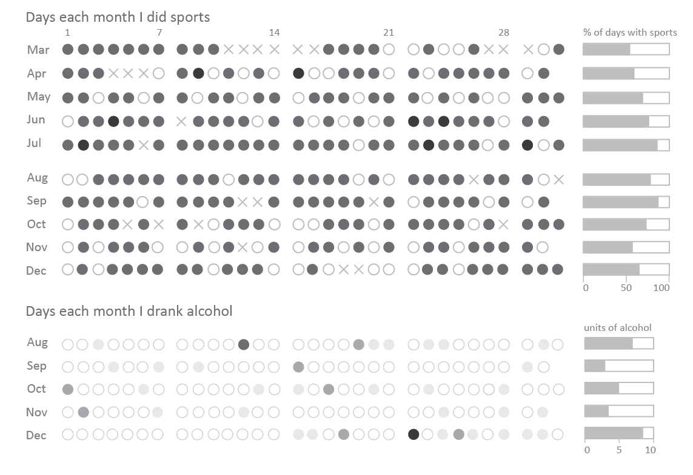

Tables: Calendar Data
A New year’s resolution
At some point in her life, a girl’s gotta start with sports to stay healthy and fit when getting older. Did you know that the number of cells in a brain increases when exercising, and that bones stay strong when close to trained muscles (they actually get signaling molecules telling them to stay young!)? My 2017 New year’s resolution was therefore to do sports as often as possible.
As I am in love with data, I tracked my progress daily. You can see that I increased from doing sports around 50% of the days to a whopping 90% in July. In January and February, before I was keeping the diary, it was well below half of the days. Clearly, it is easier to run, swim etc. in summer, and I could not keep this up. It was challenging when traveling and on days with a lot of evening appointments and work (November). Most of the days without sports were when I had visitors!
Initially I also tracked exercise time and what kind of sports I did, but that got too tiring and too complicated. But I did track other parts of my life such as my mood (hint: boring dataset, mainly correlates with female cycle!), my food and my alcohol intake. Interestingly, there is no correlation between sports and alcohol. I do not drink on those days that I feel too miserable for sports. Some days I drank a sip (light grey, a small sherry or so) after my sports, some days I neither drank nor did sports.
Since I use my diary regularly, I of course tracked all this data on paper: 
I thought a lot about how to present it best, and at the end of the day, I really wanted to showcase my daily routine – this is why the final visualization does not look very different. I only added a bar chart summarizing the data.
I started out making a dot for each day in a simple table format:
Then I adjusted the number of days and numbered them to have a week-like format. Sticking to standard practice: labeling 1, 8, 15 is of course counter-intuitive, so I quickly changed this to 7/14/21.
I then added the actual data: empty space for days without sports, a circle for days I did sports, and a cross for sick days.  Having completed the data visualization, I then started the graphic design part – decluttering wherever possible, playing with color and adjusting layout If necessary. For example, the table like boxes were not necessary at all. What about the lines separating weeks? They are ugly, even in grey!, but some guide is needed to wade through the days. The Gestalt principles show that white space is more effective in grouping that lines and boxes. To discriminate between ‘no sports’ and white space, I changed the white data points to a light grey.
Having completed the data visualization, I then started the graphic design part – decluttering wherever possible, playing with color and adjusting layout If necessary. For example, the table like boxes were not necessary at all. What about the lines separating weeks? They are ugly, even in grey!, but some guide is needed to wade through the days. The Gestalt principles show that white space is more effective in grouping that lines and boxes. To discriminate between ‘no sports’ and white space, I changed the white data points to a light grey.
All right, looking better! Now some more details… I added a summarizing bar chart of the percentage of days I did sports (not counting sick days), added titles, axis labels, tick marks, and I also showed the data for the months in which I tracked my alcohol consumption. 
At last – and always at last only! – I added color, and I am in love with blue.